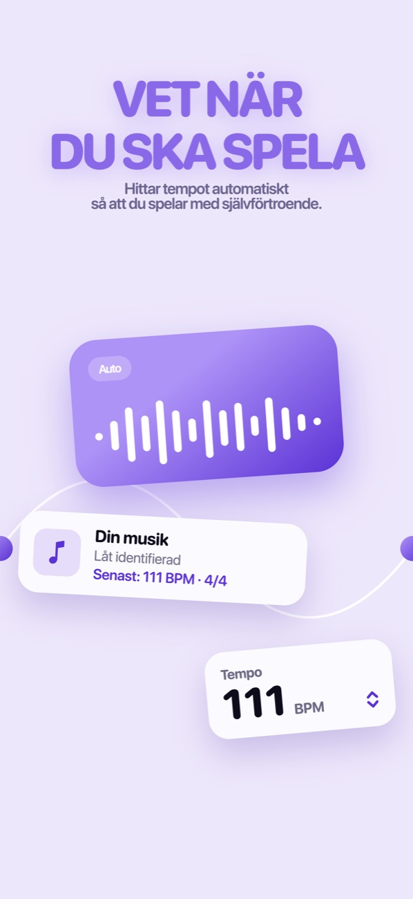
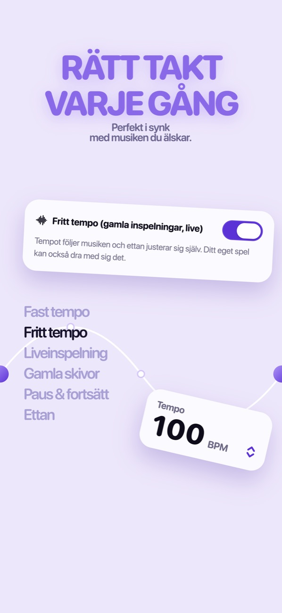
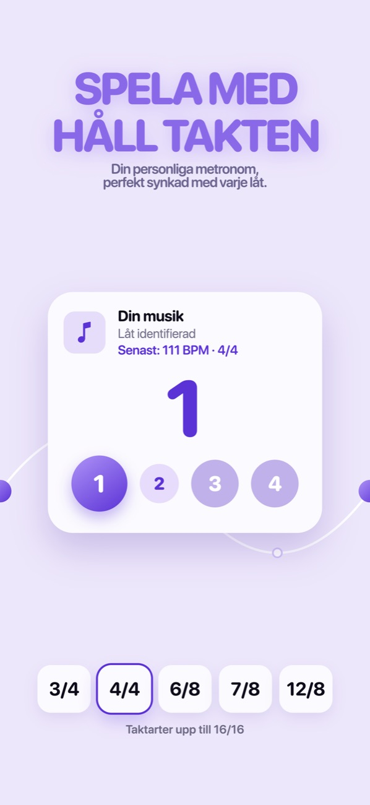
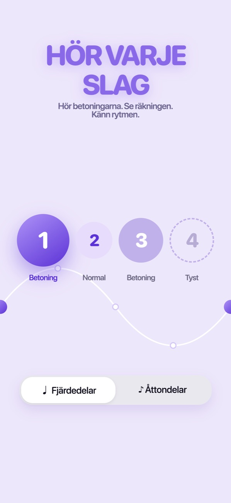

Så fungerar det
Spela musik
Från en högtalare, ett band eller en annan app.
Låt den lyssna
Efter cirka 6–10 sekunder är tempo, taktart och ettan hittade. Låtar som appen har hört förut känns igen efter cirka 5 sekunder, även utan internet.
Spela med
Metronomen klickar i takt, med ettan högre och starkare. I åttondelar om du vill.
Stannar på musiken så länge den spelar.
Fast tempo
När den har låst ligger tempo och etta fast. Att spela, sjunga eller klappa med rubbar inte metronomen.
Fritt tempo
För gamla inspelningar och liveinspelningar där tempot svajar. Metronomen följer musiken.
Igenkänning offline
Låtar den har hört startar nästa gång direkt i rätt takt, även när tempot svajar.
Paus och inträde
Med paus tystnar metronomen men följer musiken i det tysta. Inträde tar den tillbaka exakt i takt.
Gjord för hörlurar
Klickförskott mot Bluetooth-fördröjning. Klicken kan spelas genom iPhone-högtalaren.
Manuellt
En vanlig metronom med 30–300 BPM, taktarter upp till 16/16 och tap tempo. Fungerar även utan mikrofon.
Vet när du ska komma in.
Betonad etta, fjärdedelar eller åttondelar. Varje slag kan betonas, spelas normalt eller tystas.




Inget konto. Ingen reklam. Ingen spårning.
Läs integritetspolicyn- Mikrofon
- Ljudet analyseras på din enhet. Inga inspelningar sparas eller skickas.
- Låtigenkänning
- Ett ljudfingeravtryck (inget ljud) skickas till Shazam (Apple).
- Tempodata
- För en igenkänd låt skickas titel och artist till GetSongBPM.
Support för AutoMetronom
Beskriv kort ditt ärende. Vi svarar så snart som möjligt och använder dina uppgifter enbart för att hantera ärendet.
För att vi ska kunna hjälpa: ange enhet, iOS-version, appversion, låten som spelades och en kort beskrivning. En skärmbild hjälper ofta.
Juridiska texter
Välj regionen där du använder AutoMetronom.
- SchweizIntegritetspolicyAnvändarvillkorCopyright
- Europeiska unionen och EESIntegritetspolicyAnvändarvillkorCopyright
- USAIntegritetspolicyAnvändarvillkorCopyright
- FastlandskinaIntegritetspolicyAnvändarvillkorCopyright
- Andra regionerIntegritetspolicyAnvändarvillkorCopyright